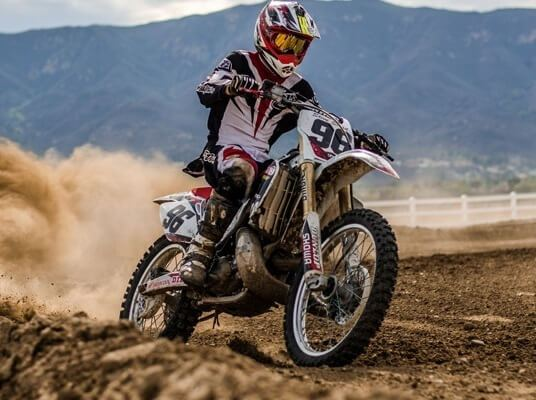
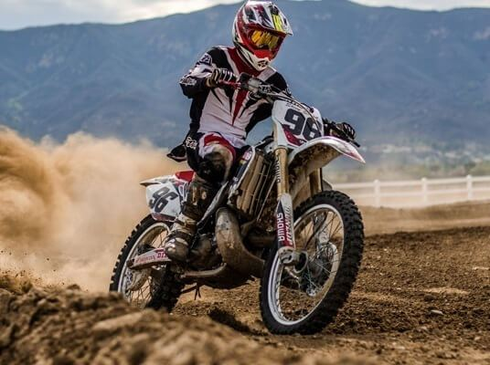

club blog
The section is under construction.
2014 Aprilia Tuono V4 R ABS Comparison
Aprilia boasts a history of bringing hard-edged track performance to the road with its Tuono streetfighter. Its latest version, the V4R ABS looks to cement its legacy, offering a comprehensive electronics package mated to a screaming 999cc V-Four, and only slightly tweaked Superbike chassis.
Aesthetically the Tuono appears similar to its RSV4 sportbike brother. Looking at it from the side, it looks nearly identical except for its beaky nose and giant bug eye head lamps. While some of our testers appreciated its image, overall its styling was less inspiring than the graceful-aging MV or brawny Kawasaki and BMW. Still, not everyone was so critical of Tuono’s styling with Dunstan claiming it was his second favorite behind the Brutale.
Hop into the seat and the Aprilia’s ergonomics are most aligned with that of the German bike. It feels long and tall due to its highest-in-class seat height (32.8 inches). The handlebar is wide but the height is a good comprise between sport and relaxed cruising. It’s also certainly no featherweight, tipping the scales at 478 pounds with a full tank of gas. That’s 21 pounds more than the S1000 but 7 and 3 pounds lighter than the Kawi and MV, respectively.
Through turns, it doesn’t respond with the same vigor as the others. It’s certainly no slouch but it does take a little more muscle to get pointed in the right direction due in part to its relatively long 56.9 in. wheelbase. However once turned, we were in awe of the chassis, as it delivers the most amount of feedback through the controls. Yet its sport capability doesn’t come at the price of comfort, with it also scoring top points in that category, too.
“The riding position is super comfortable,” reveals Abbott. “But one of the big things is how well it corners and how it feels through the corners. It just feels connected to the road.”
“I wasn’t expecting it to handle as well as it did,” agrees Dunstan. “The bike responded well to aggressive riding. You could get on the brakes hard, it was very well mannered when the backend came out—the slipper clutch was very smooth and you felt a lot of confidence in the bike.”
Though the Aprilia lacks the high-end optional semi-active suspension of the BMW, the Aprilia’s more conventional set-up is superior in function whether railing around the racetrack or commuting on pot-hole laden streets. In fact, we barely had to touch the clickers with it performing well near the stock settings.
2014 Aprilia Tuono V4 R ABS Comparison
Aprilia boasts a history of bringing hard-edged track performance to the road with its Tuono streetfighter. Its latest version, the V4R ABS looks to cement its legacy, offering a comprehensive electronics package mated to a screaming 999cc V-Four, and only slightly tweaked Superbike chassis.
Aesthetically the Tuono appears similar to its RSV4 sportbike brother. Looking at it from the side, it looks nearly identical except for its beaky nose and giant bug eye head lamps. While some of our testers appreciated its image, overall its styling was less inspiring than the graceful-aging MV or brawny Kawasaki and BMW. Still, not everyone was so critical of Tuono’s styling with Dunstan claiming it was his second favorite behind the Brutale.
Hop into the seat and the Aprilia’s ergonomics are most aligned with that of the German bike. It feels long and tall due to its highest-in-class seat height (32.8 inches). The handlebar is wide but the height is a good comprise between sport and relaxed cruising. It’s also certainly no featherweight, tipping the scales at 478 pounds with a full tank of gas. That’s 21 pounds more than the S1000 but 7 and 3 pounds lighter than the Kawi and MV, respectively.
Through turns, it doesn’t respond with the same vigor as the others. It’s certainly no slouch but it does take a little more muscle to get pointed in the right direction due in part to its relatively long 56.9 in. wheelbase. However once turned, we were in awe of the chassis, as it delivers the most amount of feedback through the controls. Yet its sport capability doesn’t come at the price of comfort, with it also scoring top points in that category, too.
“The riding position is super comfortable,” reveals Abbott. “But one of the big things is how well it corners and how it feels through the corners. It just feels connected to the road.”
“I wasn’t expecting it to handle as well as it did,” agrees Dunstan. “The bike responded well to aggressive riding. You could get on the brakes hard, it was very well mannered when the backend came out—the slipper clutch was very smooth and you felt a lot of confidence in the bike.”
Though the Aprilia lacks the high-end optional semi-active suspension of the BMW, the Aprilia’s more conventional set-up is superior in function whether railing around the racetrack or commuting on pot-hole laden streets. In fact, we barely had to touch the clickers with it performing well near the stock settings.
Like the MV, the Aprilia benefits from excellent ABS calibration that responds accurately to road conditions with minimal intrusion (least restrictive setting). Problem is, the front brake hardware felt soft and wasn’t nearly as sharp as the others (it felt like there was some air in the hydraulic system). Even still, the Aprilia boasts excellent stopping performance whether ABS was on or off. We were also very fond of its nearly perfectly set-up and authentic racing-style slipper clutch that helped maintain chassis composure while entering corners at speed.
Bautista Signs with Aprilia Gresini MotoGP
Aprilia Racing have announced that Alvaro Bautista signed a two-year contract to ride for the Aprilia Gresini Racing Team starting when the marque returns to the grid in 2015. Bautista got his start in the premier class with Suzuki but switched to Gresini Honda for the 2012 season. The Spaniard has been with the Gresini squad ever since, and now remains as it switches machinery. Bautista has a history with Aprilia as well, earning his first world championship title in 2006 while on the Master – MVA Aspar Aprilia Team in the 125cc class. The full Aprilia press release is included below. – MotoUSA Ed.
Spanish rider Alvaro Bautista will ride one of the official Aprilias that will race next year in the MotoGP Championship, managed by the Aprilia Gresini Racing Team.
The agreement with Bautista is valid for two years, for the 2015 and 2016 seasons. A rider with vast experience, Bautista – born in Talavera de la Reina on 21 November 1984 – took his first world championship steps astride an Aprilia 125cc, which he rode to victory as World Champion in the “eighth litre” class in 2006.
In his fifth year in the top category, MotoGP, Bautista boasts 3 podiums and one pole position and his trophy case includes a total of 16 wins, 33 podiums and 18 pole positions.
The signing of Alvaro Bautista comes just a few hours after the official announcement that the Aprilia brand will return to the MotoGP World Championship – already in 2015, one year ahead of the previously announced plan – through a four year cooperation with the Gresini Racing Team and Aprilia Racing manager, Romano Albesiano, commented with satisfaction. “This represents another step in defining the team that will take the Aprilia bikes onto the track for the next MotoGP season” said Mr Albesiano. “On Friday we announced our return to the championship with Gresini Racing. Today we have inserted another very important tile in the mosaic by announcing Bautista’s signing. I am particularly satisfied because Alvaro has been confirmed on a team that he already knows well, creating the basis for that rapidity in finding maximum competitiveness that led us to moving up our plans to return to MotoGP”.
“I am happy to be able to continue working with Bautista – confirmed Fausto Gresini – Alvaro has significant experience in MotoGP so his contribution will certainly be essential in developing the new projects with Aprilia in the best possible way. I believe very much in him and his potential and I am confident that he will be able to bring us the results we are expecting. Also, this two year agreement will allow us to maintain continuity in the bond between Alvaro and Gresini racing which was formed in 2012 and that has been strengthened over the years”.
Also enthusiastic about the new project is Alvaro Bautista: “I am very happy to have signed an agreement with Aprilia or the next to MotoGP World Championship seasons. Working in close contact with a manufacturer is what I wanted for my future and Aprilia has offered me a great chance. I am also very motivated to embark on this new adventure because I am coming back to a brand that has brought me great satisfaction in the past and with which I have shared some great times. Above all, the cooperation between Aprilia Racing and Gresini Racing will allow me to stay on a team that I’ve been racing with already for three years and which has become like a family to me. I have worked directly for a manufacturer in the past and I really liked developing a new project together. Knowing that I’ll be able to count on the support of so many engineers and technicians is exciting and I can’t wait to get started working with them”.
 
